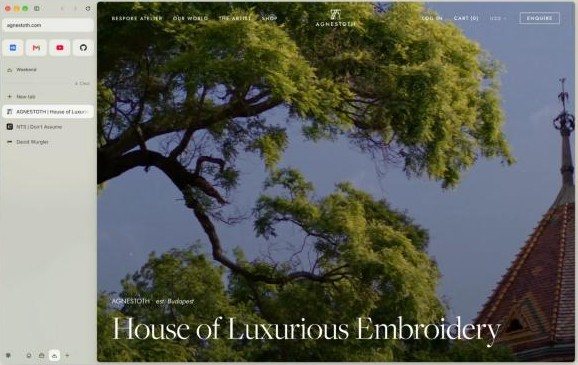
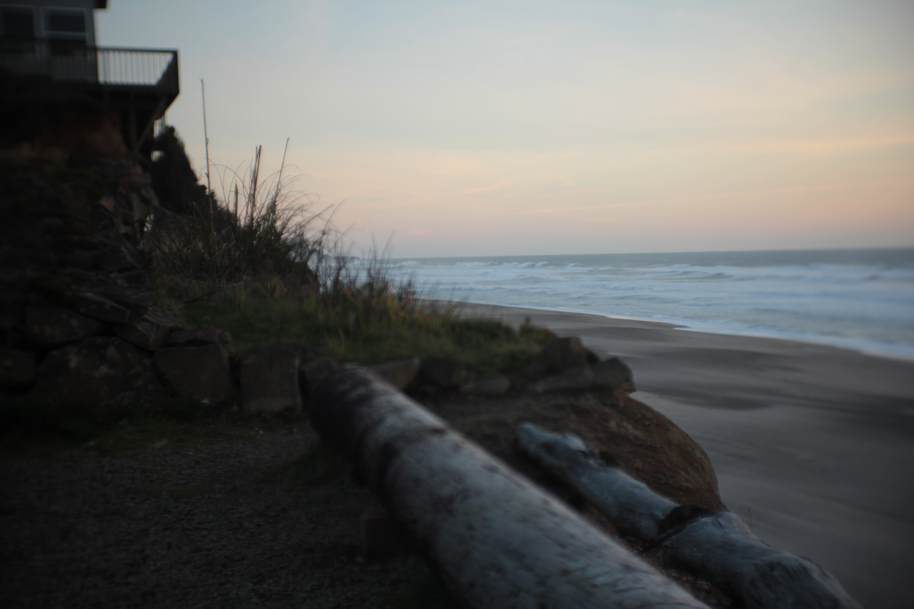
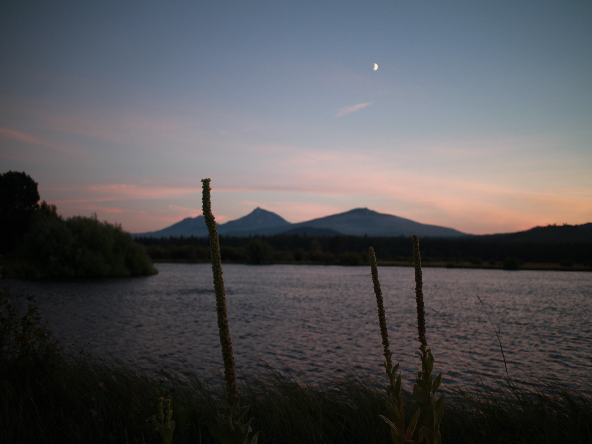
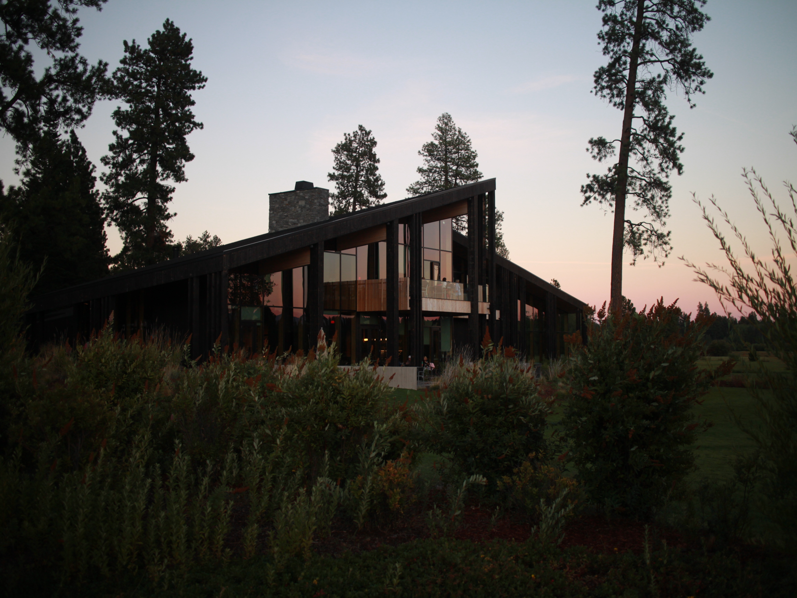
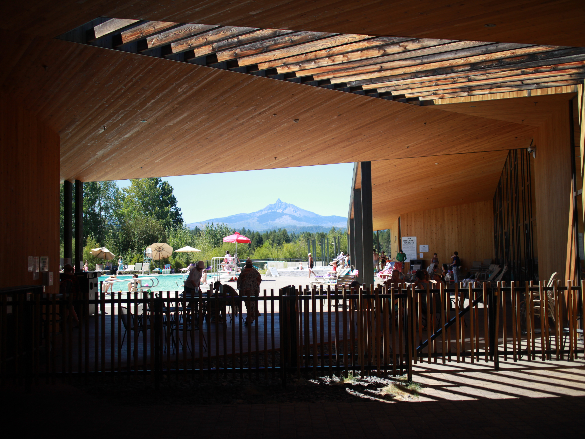
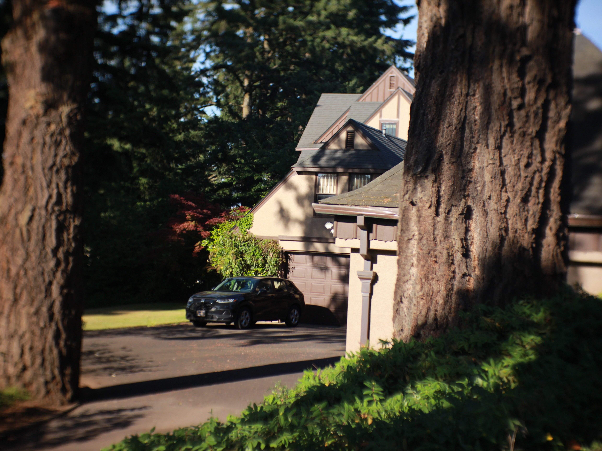
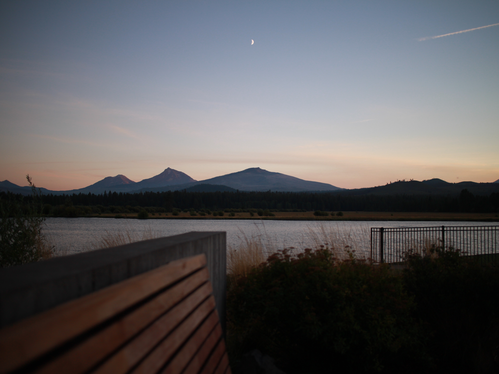

A calm desktop browser for people who don't want to learn a new browser. I wrote the brief and directed Claude Code through every phase.
macOS · Windows · Open source
firnbrowser.com



A calm desktop browser for people who don't want to learn a new browser. I wrote the brief and directed Claude Code through every phase.
Every project starts with a document: who it's for, the rules the agent can't break, and a done test for each step. Then I direct Claude Code through it in pieces small enough to check. Same as the warehouse: decide what good looks like, then make it hard to get wrong.

I sing, write, and produce. Songs placed on Virgin River, Pretty Little Liars, Queen Sugar, and others through Secret Road.


